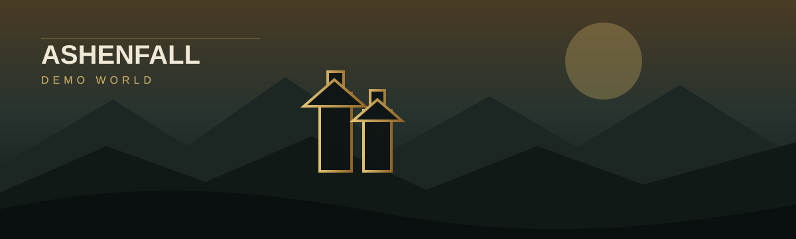

v3.1.0 · Stable on main
Keep every world,
client, and mod in sync.
Dragonwilds Sync brings Singleplayer, Co-Op, Connected, and Dedicated World profiles together with authenticated client synchronization, server operations, UE4SS/RuneSchema/PAK management, Characters and RSDW-L tools, public discovery, Quick/headless hosting, and secure remote administration.
—□×
WORLD MANAGEMENTCONNECTED

DEDICATED WORLD
Ashenvale
ModdedCo-op Steam ServerCL-232224
Steam ServerCL-232224
Steam ServerCL-232224Online12 / 20
SERVERHealthy
MOD SYNCCurrent
UPDATEReady
WORLD PROFILESCLIENT SYNCSERVER CONTROLMOD MANAGEMENTQUICK + HEADLESSWEBGUICHARACTERS + RSDW-L
Technical overview
See what V3 ships, what still needs physical proof, and what gets hardened next.
The Tech page follows the current application contract: persistent window settings, experimental handheld presentation, Linux server/client runtime separation, authenticated manifests, public directory boundaries, Characters/RSDW-L, Quick/headless hosting, and the remaining real-machine acceptance limits.